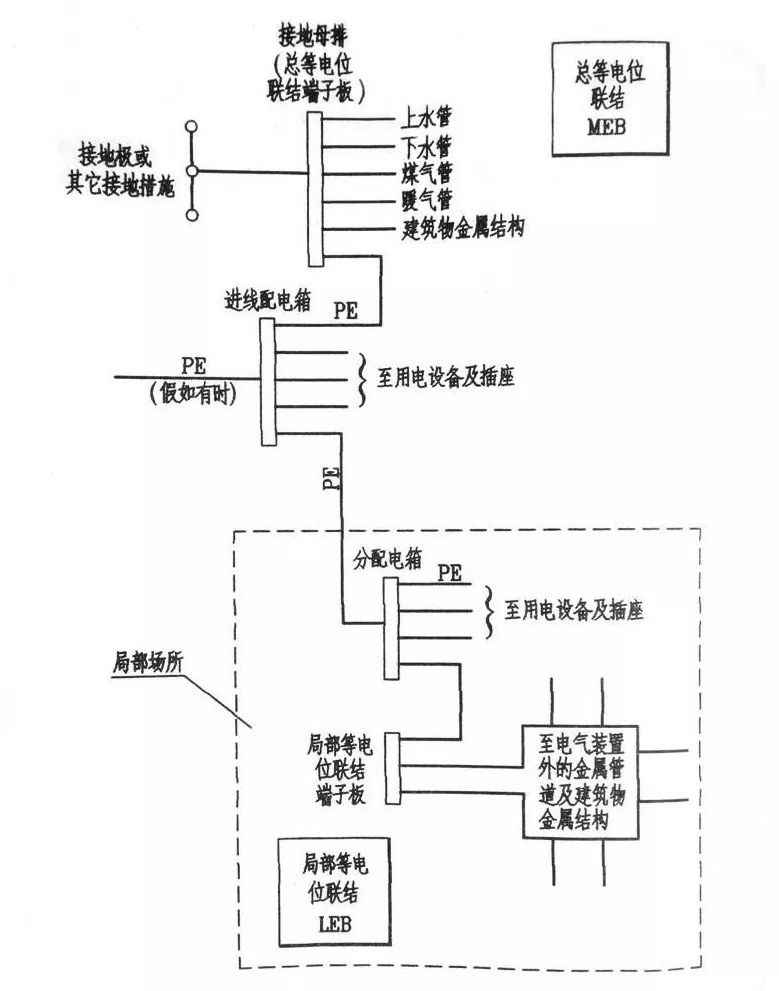
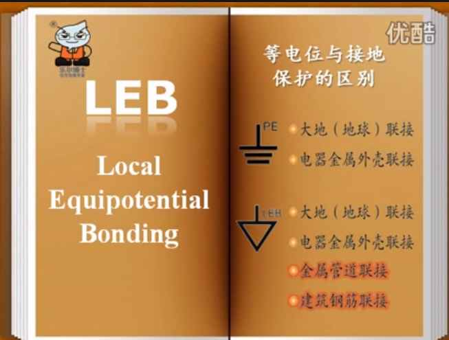
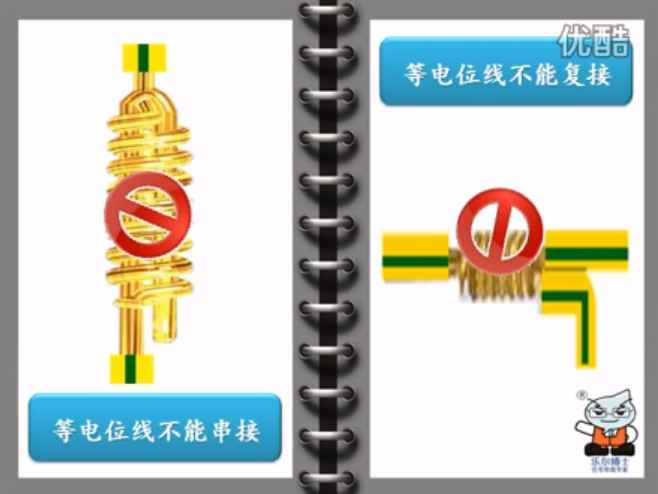
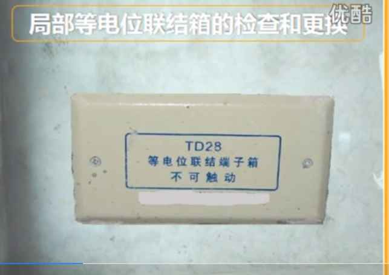
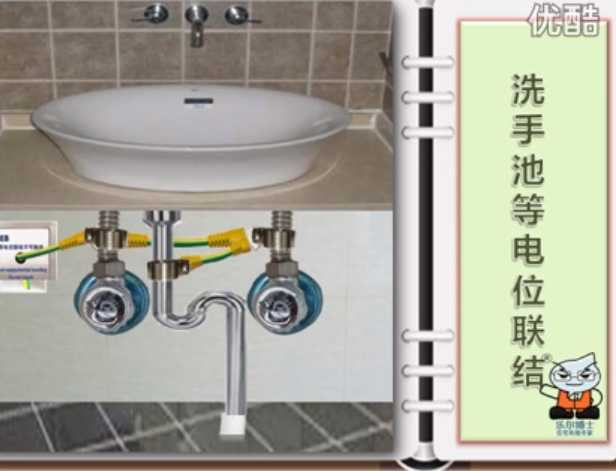
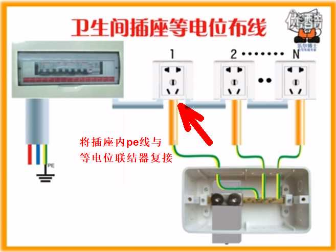
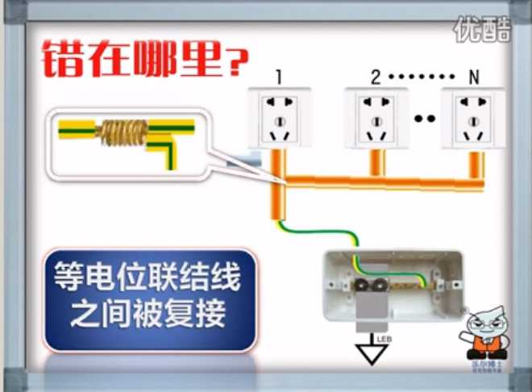
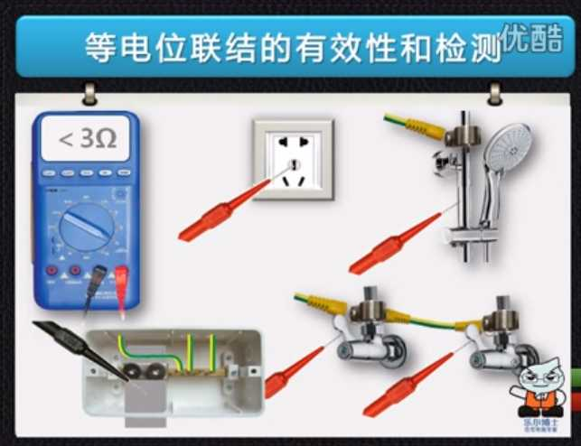

等电位与接地是两个不同的概念，PE线是接地，LEB线接的也可以是地，也可以不是地，只要让卫生间处于同一电位即可。卫生间插座内的PE线可能会带上危险电位，这时就通过LEB（局部等电位）对该电位进行钳制，故LEB线并非是PE支线。 如今卫生间承载的功能越来越多，各类电器进入卫生间也给用电安全带来隐患。在浴室、游泳池等特别潮湿的场所内，人体皮肤完全湿透，人体阻抗大幅度下降，金属管道、结构等种种原因传导来的十几伏的不高的电压就可使人体通过大于心室纤维性颤动电流阈值而电击致死。如果电气设备漏电，会使接触到的导电介质的电位升高，这样人触碰到以后，电流就会通过人体流向电位低的一端，导致人体触电。如果是等电位联接，有电的介质会形成连通的整体，电位相等，电流不会流动，安全系数上升 局部等电位联结和漏电保护器是两种不同的安全保护措施，不能互相代替。等电位的作用是为了保证某电位基本相等，不至于产生较大电压伤害人体。而地线的作用是保证漏电部位与大地之间的电阻相对较小，从而保证流经人体的电流较小。一个是保证电压较小，一个是保证电流较小。 只要电位相等，不产生电位差，就不会发生电击事故，无需将电位引入接地装置。局部等电位要求在局部区域内接触到的电阻不大于3Ω，只要能将卫浴间贯通成一个等电位体，即使外界有高电压，人在卫浴内触碰不到外界高电压导体，也是安全的。        